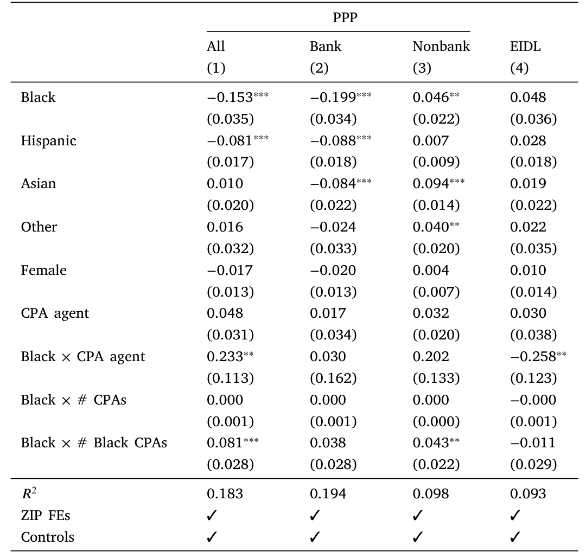
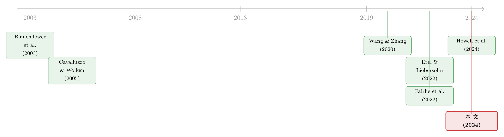

银行不肯放的款，黑人餐馆只能去金融科技公司「绕路」——但绕不过去的那一截
本文读的是 Chernenko & Scharfstein (2024, Journal of Financial Economics)：在新冠救助的薪资保护计划 (Paycheck Protection Program, PPP) 里，黑人餐馆拿到贷款的概率比观测上几乎一样的白人餐馆低 25.5 个百分点。他们确实更多地转向金融科技等非银行渠道「绕路」，但这条路只能补回一部分缺口；剩下的，由地理、企业特征，以及——最难洗清的——种族偏见来解释。而 CPA（注册会计师）的存在，几乎能把这道沟填平。
1 一个本该「人人有份」的项目
2020 年 3 月，新冠把美国的小生意按在地上摩擦。国会几乎是连夜通过了 CARES 法案，推出薪资保护计划 (PPP)：小企业管理局 (Small Business Administration, SBA) 为银行发放的低息贷款做担保，总额约 8000 亿美元，只要企业保住雇员、付得起房租水电，这笔钱就可以「转为补助」——也就是说，借了不用还。
这是一个设计上「人人有份」的项目。雇员不超过 500 人的企业基本都符合条件，钱也管够（第二轮放开后尤其如此）。可一旦数据摊开，画面就刺眼了：黑人拥有的小企业，明显更难拿到这笔救命钱。
问题是，这件事很难「证」。你打开 SBA 公布的贷款名单，看到的只是「谁拿到了钱」。可是没拿到钱，原因可能是两头的：要么是这家企业根本没去申请（需求侧），要么是它申请了却被银行晾在一边（供给侧）。前者是一笔「自己的选择」，后者才是我们通常说的歧视。更糟的是，SBA 数据里有 83% 的借款人压根没填种族——你连「谁是黑人企业」都先得猜出来。
这篇论文要回答的，正是这个看似无解的问题：在只能看到「结果」的世界里，怎么把需求和供给拆开？黑人企业拿不到 PPP，到底是不想要，还是要不到？
2 为什么是佛罗里达的餐馆
要拆开需求和供给，你需要一个「几乎所有人都该符合条件、且你能看清每一家」的样本。作者的第一步棋，就是把镜头死死对准佛罗里达州的持牌餐馆。
为什么是餐馆？因为佛州的餐馆必须持证经营，州里有一份完整的牌照名单——这相当于给了研究者一份「合格企业的全样本」。几乎所有有座位的餐馆都符合 PPP 条件，所以「没拿到钱」就不太可能用「不合格」来搪塞。作者再把这份牌照名单层层拼接：
- 用佛州公司注册记录 (corporate records) 找到餐馆的实际所有人；
- 用选民登记数据 (voter registration) 读出所有人「自报」的种族与族裔——这是全文识别的命门，下文细说；
- 用 Yelp 拿到餐馆的规模、年龄、点评数、照片数、是否收信用卡等一大堆控制变量；
- 用 UCC 留置权登记 (Uniform Commercial Code filings) 和房贷记录，判断这家餐馆或其老板之前有没有银行的有担保借款关系。
样本里剔除了食品车、纯外卖、连锁加盟、酒店餐馆，留下一批相对同质的「有座位的独立餐馆」。最后他们能匹配上 87.9% 的 PPP 借款人和 84.5% 的 EIDL 借款人。
这里有个被很多人忽略的方法论贡献：种族是「读」出来的，不是「猜」出来的。此前大量研究只能用机器学习从姓名、地址去预测种族。作者在另一篇论文 (Chernenko & Scharfstein, 2023) 里证明，预测种族会系统性地低估无条件差距、夸大地理的作用、并严重低估「条件差距」。用选民登记的自报种族，等于把测量误差这层噪音直接拿掉了。
3 第一个事实：25.5 个百分点，而且全卡在银行这道关
把样本搭好，第一个描述性事实就摆了出来：黑人餐馆拿到 PPP 贷款的概率，比白人餐馆低 25.5 个百分点。 西班牙裔低 10.7 个点，亚裔低 2.3 个点，女性所有者低 4.8 个点。除亚裔在 10% 水平显著外，其余都在 1% 水平上显著。这是一道又宽又深的沟。
接着，一个自然的问题是：这道沟是哪儿来的？作者把 PPP 贷款按来源一拆——银行 vs. 非银行（主要是金融科技公司）——答案立刻清晰了：差距几乎全部来自银行这一端。
- 黑人餐馆从银行拿到 PPP 的概率比白人低
34.6个百分点； - 西班牙裔低
11.3，亚裔低10.0，女性低5.9个百分点。
注意到没有：在银行端，连亚裔餐馆都低了整整 10 个点。可前面我们说亚裔的总体差距只有 2.3 个点。这中间的差额去哪了？
去了非银行。这就引出了全文反复要讲透的那一个核心——
4 核心：一次「只补回一半」的替代
黑人、西班牙裔、亚裔餐馆在银行这头碰了壁，于是大量转向金融科技等非银行 PPP 放贷机构。这种「部分替代 (partial substitution)」是本文的题眼。
对亚裔餐馆来说，这次绕路是成功的：非银行多放的款，刚好把银行少放的款补平，总体差距收窄到只剩 2.3 个点。
但对黑人、西班牙裔和女性所有者，绕路只补回了一截。非银行那条路没能把缺口填满，于是总体上他们仍然比白人更难拿到 PPP。这就是「部分」二字的全部分量——通道是开了，但开得不够宽。

Table 9: reports the results. We interact all demographic dummies
为什么非银行能吸纳一部分被银行拒之门外的少数族裔？一个直觉是：金融科技公司的申请几乎全在线上完成，而银行往往要面对面打交道，后者给「偏见」留下的施展空间更大。（关于金融科技如何挤进传统信贷市场、又为何「监督更差却照样抢客」，可参见《监督做得更差，却照样抢走你的客户》；关于「文化偏见」如何在放贷中真实地标价，又如何被一个算法「祛魅」，可参见《替自己人放贷，为什么反而亏了钱？》。）
但「绕路补不满」只是现象。真正要害的问题在后面：这道补不满的缺口，到底是因为黑人餐馆「不想要」，还是「要不到」？
5 真正关键的一步：用 EIDL 把「需求」这个借口堵死
这是全文我最欣赏的一步棋。
要否证「需求侧解释」（黑人餐馆只是没那么想申请），最干净的办法，是找一个同样针对小企业的紧急救助项目，但它的发放渠道不经过银行。作者找到了它——经济伤害灾难贷款 (Economic Injury Disaster Loan, EIDL)。EIDL 也是 SBA 的项目，疫情期间大幅扩容，但有两点关键不同：贷款不能转为补助（条件更差），而且企业直接向 SBA 在线申请，没有银行这个中间人。
逻辑链条于是闭合了：
如果黑人餐馆是「不想要政府救助」，那么在 EIDL 里他们也应该更少； 如果黑人餐馆是「要不到（卡在银行/偏见）」，那么在没有银行的 EIDL 里，差距就该消失。
结果是后者。PPP 里那道刺眼的种族差距，在 EIDL 里根本不存在——如果说有什么不同，少数族裔（尤其西班牙裔）反而更可能拿到 EIDL。条件更差的项目，少数族裔却用得更多，这几乎只能解释为：他们对紧急救助有真实而强烈的需求，只是在 PPP 这条「要过银行」的路上被卡住了。
然后作者再加一道保险。他们盯住一批领过 EIDL Advance 补助的企业——这些企业按每雇员 1000 美元、最多 10 人拿到现金补助。能领到这笔补助，意味着两件事：其一，这家企业明确知道、且需要政府救助（需求被「钉死」了）；其二，补助金额直接暴露了雇员人数，于是可以直接控制企业规模。就在这批「需求已被证明」的企业里，黑人企业拿到 PPP 的概率仍显著低于雇员数相同的白人企业。
需求侧的借口，至此被堵得严严实实。剩下的，全是供给侧的故事。
6 于是反转：把 25 个百分点一层层剥开
需求被排除后，作者像剥洋葱一样，逐层去解释那 25.5 个百分点的黑人差距。他们列了六个嫌疑人：(1) 地理；(2) 企业特征；(3) 其他需求差异；(4) 既有借贷关系；(5) 专业帮助（CPA）的可得性；(6) 种族偏见。
地理。 加入 ZIP 邮编固定效应后，黑人差距从 25.5 降到 19.0，西班牙裔从 10.7 降到 8.9。也就是说，地理只解释了大约五分之一。而这块地理效应的三分之二，又能被两个邮编特征讲清楚：人均银行网点数和家庭收入中位数——银行越少、越穷的社区，越拿不到 PPP。
企业特征。 再控制餐馆的规模、年龄、点评数、照片数、是否收信用卡等，黑人差距又掉了大约 10 个点（约占无条件差距的 40%），但仍剩 9.2 个百分点。西班牙裔降到 5.7 个点。
借贷关系。 这一步的结果有点反直觉。少数族裔餐馆确实更少有银行的有担保借款、也更少从银行办过房贷；可一旦你控制住既有银行借贷关系，测得的银行 PPP 差距几乎纹丝不动。换句话说，「黑人企业和银行关系少」并不能解释这道沟。（关于银行为何愿意为「关系」先亏本拉客、关系在信贷里到底值多少，可参见《银行为什么舍得先亏本拉客？》。）
到这里，地理加企业特征，合起来解释了那 25 个百分点里的大约三分之二。剩下三分之一，要靠最后两个嫌疑人。
7 两个最有意思的发现：CPA 与偏见
先说 CPA。 PPP 申请要算「合格贷款额」、要备文件，对没有专业帮手的小老板是实打实的行政负担。作者构造了两个衡量「能否拿到专业帮助」的指标：一是这家公司在注册时有没有把 CPA 作为注册代理人 (registered agent)；二是公司所在邮编里 CPA 的数量（并单独数出黑人 CPA 的数量）。
结果相当惊人：
- 把 CPA 当注册代理人的黑人企业，拿到 PPP 的概率和观测相似的白人企业一样高——差距没了；
- 邮编里每多一个黑人 CPA，黑人企业的 PPP 差距就缩小
8.1个百分点。样本里黑人 CPA 的均值是 0.24，于是作者算出：一个邮编只要有两个黑人 CPA，黑人企业的 PPP 差距就彻底消失。
而且这种「CPA 红利」主要来自非银行 PPP 贷款的增加——CPA 似乎特别擅长帮企业搞定金融科技平台那套「自助式」申请，因为这些平台运营精简，没有余力手把手帮申请人补材料。
再说偏见。 这是全文最锋利、也最难洗清的一刀。作者用 Project Implicit 的县级「内隐 (implicit)」与「外显 (explicit)」种族偏见指标，问一个直接的问题：在白人居民对黑人偏见更深的地方，黑人企业是不是更难从银行拿到 PPP？
是。效应还很大：内隐偏见每上升一个标准差，黑人餐馆从银行拿到 PPP 的概率就下降 19.1 个百分点。 而且在偏见更深的县，黑人企业更可能转向非银行 PPP 和 EIDL——正因为这些渠道在线上完成、面对面互动少，留给偏见的空间也小。
一条完整的因果故事于是浮出水面：银行端的偏见把黑人企业推出门 → 他们只能去金融科技平台绕路 → 但绕路要会填那套在线申请，于是有没有 CPA 帮忙成了关键 → 没有专业帮手的，缺口就补不回来。
8 文献脉络
把这篇论文放回它的来路，会看得更清楚。
最早的一脉，是小企业信贷中的歧视研究。Blanchflower, Levine & Zimmerman (2003) 用调查数据发现少数族裔企业更容易被银行拒贷、也更不敢申请；Cavalluzzo & Wolken (2005)、Blanchard, Zhao & Yinger (2008) 沿着这条线继续夯实。到 Fairlie, Robb & Robinson (2022)，结论被推进了一步：这些效应在种族偏见更深的地方更强——这恰恰是本文「偏见更深的县差距更大」的前身。

第二脉，是疫情后井喷的 PPP 研究。Granja, Makridis, Yannelis & Zwick (2022) 问 PPP 有没有打到该打的目标；Li & Strahan (2021)、Balyuk, Prabhala & Puri (2021) 研究银行如何优先照顾既有客户；Griffin, Kruger & Mahajan (2023) 揭了金融科技放贷里的欺诈（顺带一提，作者特意强调，本文样本是持牌、可匹配公司记录和 Yelp 的真实餐馆，几乎不可能被那类欺诈污染——关于疫情救助欺诈的后续，可参见《偷来的钱，会去买房》）。
第三脉，也是本文真正的对话对象，是 PPP 里的种族差距。Wang & Zhang (2020) 在邮编层面发现黑人居民更多的地区 PPP 取得率更低；Erel & Liebersohn (2022) 发现金融科技在少数族裔人口更多的邮编放出了更大份额的 PPP——「地理重要」由此立住。但这两篇都停在地理。和本文同期的 Howell, Kuchler, Snitkof, Stroebel & Wong (2024) 用 PPP 全样本，发现拿到 PPP 的黑人企业更可能由金融科技或四大行、而非小银行放款，并指出银行的「自动化」能缩小差距。
本文的位置，是把分析从地理和「拿到钱的人从哪借的」，推进到企业层面的「到底拿没拿到」。作者证明，邮编固定效应只解释了五分之一的差距，而企业特征、专业帮助和种族偏见的合力要大得多——这是此前文献基本沉默的地带。
9 评论与延伸（Q&A + 研究方向）
（a）几个可能的疑问
Q：只看佛罗里达的餐馆，结论能外推吗？
作者自己做了扩展：借助 EIDL Advance 补助样本，把分析拉到佐治亚、路易斯安那、北卡（都有公开、含种族的选民登记）。多州样本里黑人、西班牙裔差距的量级与佛州「大体一致」。餐馆只占全部 PPP 贷款的 6.4%，外部效度仍有边界，但同期 Howell et al. (2024) 用全样本得到方向一致的结论，让人放心不少。
Q：会不会黑人餐馆本来就更脆弱、疫情中更多倒闭，所以没去申请？
这正是作者要堵的需求侧漏洞。控制可观测特征后，少数族裔餐馆并不比白人更可能关门；只看「活下来」的餐馆，结论也和全样本一致。再叠加 EIDL Advance「需求已被证明」的子样本，需求解释基本被排除。
Q：把种族偏见的因果效应归到 Project Implicit 指标上，靠谱吗？
这是全文识别上最该打问号的地方。县级偏见指标可能与一堆未观测的地方经济特征相关（信贷供给、银行结构、产业构成）。作者用了 ZIP×行业固定效应、控制规模与借贷关系来缓解，但严格说这仍是「相关性强烈暗示因果」，而非一个干净的外生冲击。
19.1个百分点这个量级很大，值得后续用更外生的偏见变动去检验。
Q：为什么控制了银行借贷关系，差距几乎不动？这不反直觉吗？
反直觉，但信息量很大。它说明问题不在「黑人企业和银行没关系」这个存量上，而在 PPP 申请这个当下的处理过程里——银行如何对待一个走进门的黑人申请人，比这个人过去有没有贷过款更重要。这把矛头从「历史关系」指向了「当期行为/偏见」。
Q：金融科技既然能绕过偏见，是不是就该让它来解决问题？
本文给的答案是审慎的「不全是」。金融科技确实削平了一部分差距，但它运营精简、没能力帮申请人补材料，于是只有当少数族裔企业本身能拿到 CPA 这类专业帮助时，金融科技才真正管用。换句话说，技术降低了偏见的空间，却把门槛转移到了「会不会填表、有没有帮手」上。
Q：CPA 那个「两个黑人 CPA 就抹平差距」的结论，会不会是巧合？
要小心。黑人 CPA 的数量本身可能和社区里的其他东西（黑人创业生态、社群网络）相关，存在遗漏变量。作者用了邮编层面的变异并区分总 CPA 与黑人 CPA 来识别，但这更像是一个有启发性的相关事实，而非随机实验。它最大的价值是指出了一个可干预的政策抓手。
（b）几个可能的研究问题与提案
-
把镜头从「小企业贷款」搬到「公司债与信用市场」。 【经济故事】本文证明，去掉银行这个「面对面」中介，种族/族裔差距会显著收窄。那么在更市场化、更匿名的公司债一级市场里，少数族裔或女性创始人的企业，发债成本是否系统性更高？匿名化的撮合是否真能削平偏见？ 【可行性】中。可用 Mergent FISD 的发行数据匹配高管/创始人种族（难点正在种族识别——本文的选民登记法在上市公司层面不适用）。识别上需要一个类似 PPP/EIDL 的「渠道差异」自然实验，doable 但不轻松。
-
外资持有人会不会「中性化」信贷市场的本地偏见？ 【经济故事】本文的偏见效应是本地的（县级白人居民的偏见）。一个自然延伸是：当放贷方或投资者来自本地偏见结构之外（如外资银行、外资机构持有人），对少数族裔借款人的差距是否更小？这把「在线 vs 面对面」的逻辑，换成了「本地 vs 外来」。 【可行性】中。需要把贷款/持有数据与放贷方的地理/国籍、以及借款人种族同时匹配，数据拼接成本高，但识别思路清晰。
-
CPA 作为「可干预的中介」：一次政策实验的评估。 【经济故事】本文最有政策含金量的发现是「两个黑人 CPA 抹平差距」。若某州/某项目曾补贴小企业获取会计/申请协助（疫情期间不乏此类计划），就能直接评估「专业帮助」对缩小信贷差距的因果效应。 【可行性】高（若能找到这类项目的推出时点）。用双重差分 (difference-in-differences, DiD)，以项目覆盖的县/邮编为处理组，对比黑人企业 PPP 取得率的变化。数据需求和本文高度重合。
-
「部分替代」的福利账：绕路到金融科技，到底贵了多少？ 【经济故事】少数族裔被推向非银行渠道，但金融科技的利率、费用、欺诈风险都可能更高。本文讲了「拿没拿到」，没细算「拿到的那笔，代价是多少」。把价格维度补上，能给「金融科技促进普惠」这个叙事一个更完整的损益表。 【可行性】中。PPP 利率受管制，差异主要在费用与后续 EIDL 的非豁免成本上，需要额外的费率数据，识别相对直接。
10 我的判断
这篇论文最漂亮的地方，不在某个系数，而在它把一个「只能看到结果」的歧视问题，硬生生拆成了可证伪的命题。EIDL 那一招——找一个「同样救助、但不过银行」的对照项目——几乎以一己之力把「需求侧」这个万能借口请出了房间。剩下的逐层分解（地理五分之一、企业特征三分之一强、CPA 与偏见接管尾巴），逻辑干净，量级诚实。用选民登记替代算法预测种族，则是一个被低估的测量贡献。
对识别，我仍保留两点担忧。其一，种族偏见的因果解读建立在县级偏见指标与未观测地方特征不相关的假设上，19.1 个百分点的量级越大，越需要一个更外生的偏见冲击来背书。其二，CPA 的结果虽迷人，却带着明显的遗漏变量风险——黑人 CPA 的密度很可能是某种更深层社群资本的代理变量，「两个 CPA 抹平差距」更像一个值得追的线索，而非可直接搬上政策文件的弹性。
后续我最想看到的，是把这套「渠道是否经过面对面中介」的识别逻辑，搬到信用市场更上游去——公司债、银团贷款、乃至外资持有人结构里，匿名化与外来资本到底能不能、以及在多大程度上，替本地偏见「消毒」。如果答案是肯定的，那这篇关于餐馆的论文，讲的就不只是 PPP 的故事了。
参考文献
- Blanchflower, D. G., Levine, P. B., Zimmerman, D. J. (2003). Discrimination in the small-business credit market. Review of Economics and Statistics 85(4), 930–943.
- Cavalluzzo, K., Wolken, J. (2005). Small business loan turndowns, personal wealth, and discrimination. Journal of Business 78(6), 2153–2178.
- Blanchard, L., Zhao, B., Yinger, J. (2008). Do lenders discriminate against minority and woman entrepreneurs? Journal of Urban Economics 63(2), 467–497.
- Wang, J., Zhang, D. H. (2020). The Cost of Banking Deserts: Racial Disparities in Access to PPP Lenders and Their Equilibrium Implications. Working Paper.
- Balyuk, T., Prabhala, N., Puri, M. (2021). Small Bank Financing and Funding Hesitancy in a Crisis: Evidence from the Paycheck Protection Program. Working Paper.
- Li, L., Strahan, P. (2021). Who supplies PPP loans (and does it matter)? Banks, relationships, and the COVID crisis. Journal of Financial and Quantitative Analysis 56(7), 2411–2438.
- Erel, I., Liebersohn, J. (2022). Can FinTech reduce disparities in access to finance? Evidence from the Paycheck Protection Program. Journal of Financial Economics 146, 90–118.
- Fairlie, R. W., Robb, A., Robinson, D. T. (2022). Black and white: Access to capital among minority-owned startups. Management Science 68, 2377–2400.
- Granja, J., Makridis, C., Yannelis, C., Zwick, E. (2022). Did the Paycheck Protection Program hit the target? Journal of Financial Economics 145, 725–761.
- Griffin, J. M., Kruger, S., Mahajan, P. (2023). Did FinTech lenders facilitate PPP fraud? Journal of Finance 78, 1777–1827.
- Chernenko, S., Scharfstein, D. (2023). The Limits of Algorithmic Measures of Race in Studies of Outcome Disparities. Working Paper.
- Chernenko, S., Kaplan, N., Sarkar, A., Scharfstein, D. (2024). Applications or Approvals: What Drives Racial Disparities in the Paycheck Protection Program? Working Paper.
- Howell, S. T., Kuchler, T., Snitkof, D., Stroebel, J., Wong, J. (2024). Lender Automation and Racial Disparities in Credit Access. Journal of Finance 79, 1457–1512.
- Chernenko, S., Scharfstein, D. (2024). Racial disparities in the Paycheck Protection Program. Journal of Financial Economics 160, 103911.